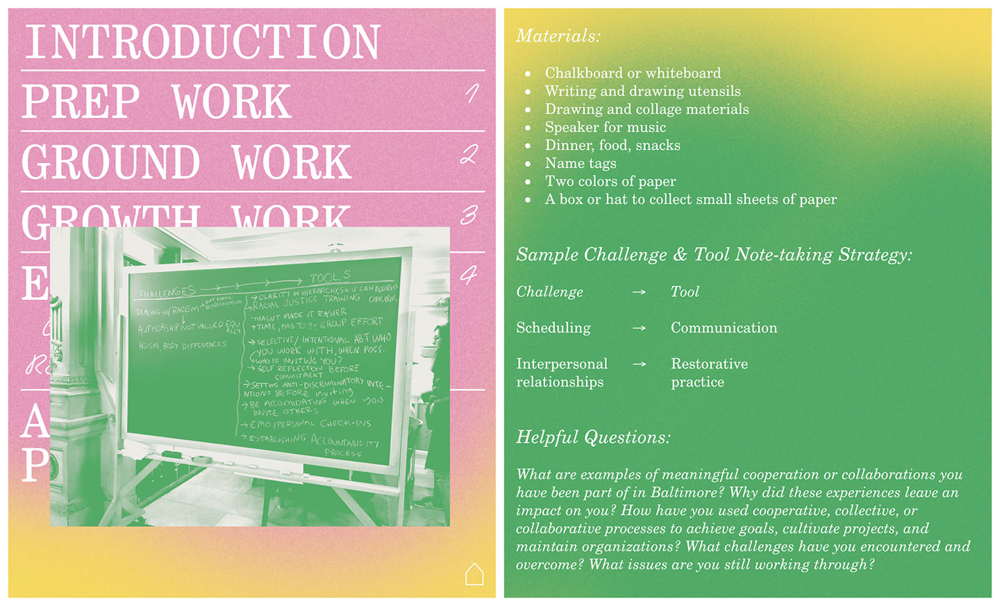

Toolkit
2020
Design & Front End
Development
The Toolkit for Cooperative, Collective, and Collaborative Cultural Work is an online handbook developed and organized by Press Press and the Institute for Expanded Research to aid in the efforts of cultural organizers.
Along with the Press Press & IER team, I developed Toolkit’s layout & visual design, in addition to executing all front end coding.